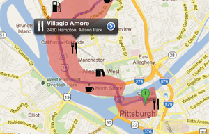
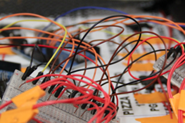
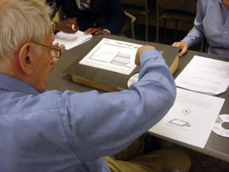

ABOUT ME
Hi there, I'm Xiaohan. (pronounced as Shiao Han) :) I'm currently an underguaduate student at Zhejiang University, China. I have rich experience in design and I'm strongly motivated to explore computer system.
I'm a self-motivated dream chaser. People once told me "female can't do engineering", and now I'm working hard to prove that I can, and I am able to do science, especially computer science, very well as a female. You can see my projects here.
I'm a passionate MOOCer. I have completed and earned certificates of 16 online courses from top universities around the world. My way of learning would not stop.
My CV is available [here] or scroll down for an abbreviated version.
COMPUTER SCIENCE


MATHEMATICS

University of California San Diego & National Research University Higher School of Economics

University of California San Diego & National Research University Higher School of Economics
INTERACTION DESIGN

Legacy in the Age of the Internet
The process of crafting a legacy is inherently subjective, both as a curated collection of the elements of one’s life, and as an evolving form of remembrance that is subject to the interpretations of those to whom it is left. We explore users’ perceptions of how their use of digital systems and information will impact how their lives are interpreted and reflected upon by their families and future generations. Findings describe nuances regarding how shifting notions about identity and technological systems impact the ways in which we share, and subsequently manage, information online.
The process of crafting a legacy is inherently subjective, both as a curated collection of the elements of one’s life, and as an evolving form of remembrance that is subject to the interpretations of those to whom it is left. We explore users’ perceptions of how their use of digital systems and information will impact how their lives are interpreted and reflected upon by their families and future generations. Findings describe nuances regarding how shifting notions about identity and technological systems impact the ways in which we share, and subsequently manage, information online.

Digital Artifacts as Legacy
Legacy is the meaningful and complex way in which information, values, and possessions are passed on to others. As digital systems and information become meaningfully parts of people’s everyday and social relationships, it is essential to develop new insights about how technology intersects with legacy and inheritance practices. We designed three interactive systems to investigate how digital materials might be passed down in the future. We conducted in-home interviews with ten parents and used the systems to provoke discussion about how technology might support or complicate their existing practices. Sessions revealed parents desired to treat their digital information in ways not fully supported by technology.
Legacy is the meaningful and complex way in which information, values, and possessions are passed on to others. As digital systems and information become meaningfully parts of people’s everyday and social relationships, it is essential to develop new insights about how technology intersects with legacy and inheritance practices. We designed three interactive systems to investigate how digital materials might be passed down in the future. We conducted in-home interviews with ten parents and used the systems to provoke discussion about how technology might support or complicate their existing practices. Sessions revealed parents desired to treat their digital information in ways not fully supported by technology.

Design Probes and Memory
This work is a set of provocative artifacts that were created as a part of Aisling Kelliher's Design Fiction and Experiential Media Design courses at the School of Design at Carnegie Mellon. These projects explore how to build tools that can augment human memory and how existing systems influence how and what we remember.
This work is a set of provocative artifacts that were created as a part of Aisling Kelliher's Design Fiction and Experiential Media Design courses at the School of Design at Carnegie Mellon. These projects explore how to build tools that can augment human memory and how existing systems influence how and what we remember.

Future Love
This project explores how digital information is changing the processes by which some people find love. For this project, I extended that idea by drawing from personalization and adaptive systems. This work was inspired by the popularity of online dating sites like Match.com and OKCupid and was completed during the Spring semester of 2013 for Aisling Kelliher's class on Speculative Design.
This project explores how digital information is changing the processes by which some people find love. For this project, I extended that idea by drawing from personalization and adaptive systems. This work was inspired by the popularity of online dating sites like Match.com and OKCupid and was completed during the Spring semester of 2013 for Aisling Kelliher's class on Speculative Design.

Curation, Provocation, and Digital Identity
Among the billions of photos that have been contributed to online photo-sharing sites, there are many that are provocative, controversial, and deeply personal. Previous research has examined motivations for sharing images online and has identified several key motivations for doing so: expression, curation of identity, maintaining social connections, and recording experiences. In this work, we used photo-elicitation interviews to explore the motivations for posting provocative, controversial, or deeply personal images and the perceived risks of doing so.
Among the billions of photos that have been contributed to online photo-sharing sites, there are many that are provocative, controversial, and deeply personal. Previous research has examined motivations for sharing images online and has identified several key motivations for doing so: expression, curation of identity, maintaining social connections, and recording experiences. In this work, we used photo-elicitation interviews to explore the motivations for posting provocative, controversial, or deeply personal images and the perceived risks of doing so.

Travelogue Mobile App
Travelogue is a iPhone app that designed as part of an interaction design studio course at Carnegie Mellon. This app is aimed at addressing the needs of mobile workers who travel to unfamiliar places as a part of their jobs. The goal of this app is to help those mobile workers identify services when visiting new areas, in addition to providing them with the opportunity to learn more about those areas.
Travelogue is a iPhone app that designed as part of an interaction design studio course at Carnegie Mellon. This app is aimed at addressing the needs of mobile workers who travel to unfamiliar places as a part of their jobs. The goal of this app is to help those mobile workers identify services when visiting new areas, in addition to providing them with the opportunity to learn more about those areas.
FitPath Mobile App
FitPath is a mobile application designed for Android devices. FitPath connects with 3rd party sensors - specifically BodyMedia's bluetooth armband and a wireless scale made by Withings and integrates that data to help users manage their physical activity and fitness goals. This app was created in collaboration with the Quality of Life Technology Center at Carnegie Mellon.
FitPath is a mobile application designed for Android devices. FitPath connects with 3rd party sensors - specifically BodyMedia's bluetooth armband and a wireless scale made by Withings and integrates that data to help users manage their physical activity and fitness goals. This app was created in collaboration with the Quality of Life Technology Center at Carnegie Mellon.

Physical Computing
I built a few physical systems (all of which were built using Arduino and Lilypad components) as a part of a class called Activating Objects, which was taught by Dr. Eric Paulos. On this page, you can see some of the documentation for a group project I completed as a part of that class. For this project, we built an interactive musical mat for kids to play with.
I built a few physical systems (all of which were built using Arduino and Lilypad components) as a part of a class called Activating Objects, which was taught by Dr. Eric Paulos. On this page, you can see some of the documentation for a group project I completed as a part of that class. For this project, we built an interactive musical mat for kids to play with.
Machine Learning
Work from two classes I've taken in machine learning and natural language processing - Applied Machine Learning and Computational Models of Discourse Analysis. This work was part of a larger research arc that investigated how to build systems that help people assess and determine the credibility of the medical and health information they find on the web.
Work from two classes I've taken in machine learning and natural language processing - Applied Machine Learning and Computational Models of Discourse Analysis. This work was part of a larger research arc that investigated how to build systems that help people assess and determine the credibility of the medical and health information they find on the web.

Health Dashboard
The Health Dashboard was my senior year capstone project for my Engineering Psychology degree at Tufts University. This project was completed in collaboration with Cambridge Consultants, an international product development firm. The goal of this project was to investigate the needs of elderly people living in assisted living facilities, in addition to the needs of their caretakers. Using our findings, we produced recommendations for the development of health tracking systems for these user groups.
The Health Dashboard was my senior year capstone project for my Engineering Psychology degree at Tufts University. This project was completed in collaboration with Cambridge Consultants, an international product development firm. The goal of this project was to investigate the needs of elderly people living in assisted living facilities, in addition to the needs of their caretakers. Using our findings, we produced recommendations for the development of health tracking systems for these user groups.
Education
Carnegie Mellon University, 2010 - Present
Ph.D. in Human-Computer Interaction
Carnegie Mellon University, 2010 - 2012
M.S. in Human-Computer Interaction
Tufts University, 2006 - 2010
B.S. in Engineering Psychology
Minor in Computer Science
Magna cum Laude
Carnegie Mellon University, 2010 - Present
Ph.D. in Human-Computer Interaction
Carnegie Mellon University, 2010 - 2012
M.S. in Human-Computer Interaction
Tufts University, 2006 - 2010
B.S. in Engineering Psychology
Minor in Computer Science
Magna cum Laude
Teaching and Mentoring Experience
Carnegie Mellon University
Interaction Design Studio
Interaction Design Overview
Independent Study in Metadata Systems
Tufts University
Intro to Computer Science
Exploring Computer Science
Data Structures
Carnegie Mellon University
Interaction Design Studio
Interaction Design Overview
Independent Study in Metadata Systems
Tufts University
Intro to Computer Science
Exploring Computer Science
Data Structures
Professional Experience
Google Research, Summer 2014
User Research Intern with Alex Kauffmann and Team Airbender
Yahoo Labs, Summer 2013
Research Scientist Intern with Dr. Jofish Kaye
Tufts University HCI Lab, 2008 - 2010
Research Assistant with Dr. Robert Jacob
Google Research, Summer 2014
User Research Intern with Alex Kauffmann and Team Airbender
Yahoo Labs, Summer 2013
Research Scientist Intern with Dr. Jofish Kaye
Tufts University HCI Lab, 2008 - 2010
Research Assistant with Dr. Robert Jacob
Publications
Gulotta, R., Yang, R., Newman, M.W., & Forlizzi, J. (2016). Fostering engagement with personal informatics systems. To appear at the 2016 SIGCHI Conference on Designing Interactive Systems (DIS 2016).
Gulotta, R., Gerritsen, D., Kelliher, A., & Forlizzi, J. (2016). Engaging with death online: An analysis of systems that support legacy-making, bereavement, and remembrance. To appear at the SIGCHI Conference on Designing Interactive Systems (DIS 2016).
Gerritsen, D.B., Olsen, J.K., Tasse, D., Vlahovic, T., Gulotta, R., Odom, W., Wiese, J., and Zimmerman, J. (2016). Mailing Archived Emails as Postcards: Probing the Value of Virtual Collections. To appear at CHI 2016 in San Jose.
Gulotta, R., Sciuto, A., Kelliher, A., & Forlizzi, J. (2015). Curatorial Agents: How Systems Shape Our Understanding of Personal and Familial Digital Information. CHI 2015 in Seoul.
Gulotta, R., Odom, W., Faste, H., & Forlizzi, J. (2014). Legacy in the Age of the Internet: Reflections on How Interactive Systems Shape How We Are Remembered. DIS 2014 in Vancouver.
Kaye, J., McCuiston, M., Gulotta, R., & Shamma, D.A. (2014). Money talks: Tracking personal finances. CHI 2014 in Toronto.
Gulotta, R., Odom, W., Faste, H., & Forlizzi, J. (2013). Digital Artifacts as Legacy: Exploring the Lifespan and Value of Digital Data. CHI 2013 in Paris.
Gulotta, R., Faste, H., & Forlizzi, J. (2013). (Dis)Repair, Reflection, and Forgetting. Workshop on Reclaiming Repair at CHI 2013 in Paris.
Gulotta, R., Faste, H., & Mankoff, J. (2012). Curation, provocation, and digital identity: Risks and motivations for sharing provocative images online. CHI 2012 in Austin.
Gulotta, R., Faste, H., & Forlizzi, J. (2012). Revelado: Exploring the preservation of our digital data. Workshop on Death and Dying at CHI 2012 in Austin.
Hirshfield, L., Gulotta, R., Hirshfield, S., Hincks, S., Russell, M., Ward, R., Williams, T., & Jacob, R. (2011). This is your brain on interfaces: Enhancing usability testing with functional near-infrared spectroscopy. CHI 2011 in Vancouver.
Gulotta, R., Kuksenok, K., Mankoff, J., & Faste, H. (2011). Ethical Challenges in Online Health Community Research. Workshop on Ethics, Logs, and Videotape at CHI 2011 in Vancouver.
Peck, E., Chauncey, K., Girouard, A., Gulotta, R., Lalooses, F., Solovey, E., Weaver, D., & Jacob, R. (2010). From brains to bytes. XRDS 16(4), 42 - 47.
Hirshfield, H., Chauncey, K., Gulotta, R., Girouard, A., Solovey, E., Jacob, R., Fantini, S., & Sassaroli. A (2009). Combining electroencephalograph and functional near infrared spectroscopy to explore users’ mental workload. HCI International 2009, 239 - 247.
PDF of my Full CV
Gulotta, R., Yang, R., Newman, M.W., & Forlizzi, J. (2016). Fostering engagement with personal informatics systems. To appear at the 2016 SIGCHI Conference on Designing Interactive Systems (DIS 2016).
Gulotta, R., Gerritsen, D., Kelliher, A., & Forlizzi, J. (2016). Engaging with death online: An analysis of systems that support legacy-making, bereavement, and remembrance. To appear at the SIGCHI Conference on Designing Interactive Systems (DIS 2016).
Gerritsen, D.B., Olsen, J.K., Tasse, D., Vlahovic, T., Gulotta, R., Odom, W., Wiese, J., and Zimmerman, J. (2016). Mailing Archived Emails as Postcards: Probing the Value of Virtual Collections. To appear at CHI 2016 in San Jose.
Gulotta, R., Sciuto, A., Kelliher, A., & Forlizzi, J. (2015). Curatorial Agents: How Systems Shape Our Understanding of Personal and Familial Digital Information. CHI 2015 in Seoul.
Gulotta, R., Odom, W., Faste, H., & Forlizzi, J. (2014). Legacy in the Age of the Internet: Reflections on How Interactive Systems Shape How We Are Remembered. DIS 2014 in Vancouver.
Kaye, J., McCuiston, M., Gulotta, R., & Shamma, D.A. (2014). Money talks: Tracking personal finances. CHI 2014 in Toronto.
Gulotta, R., Odom, W., Faste, H., & Forlizzi, J. (2013). Digital Artifacts as Legacy: Exploring the Lifespan and Value of Digital Data. CHI 2013 in Paris.
Gulotta, R., Faste, H., & Forlizzi, J. (2013). (Dis)Repair, Reflection, and Forgetting. Workshop on Reclaiming Repair at CHI 2013 in Paris.
Gulotta, R., Faste, H., & Mankoff, J. (2012). Curation, provocation, and digital identity: Risks and motivations for sharing provocative images online. CHI 2012 in Austin.
Gulotta, R., Faste, H., & Forlizzi, J. (2012). Revelado: Exploring the preservation of our digital data. Workshop on Death and Dying at CHI 2012 in Austin.
Hirshfield, L., Gulotta, R., Hirshfield, S., Hincks, S., Russell, M., Ward, R., Williams, T., & Jacob, R. (2011). This is your brain on interfaces: Enhancing usability testing with functional near-infrared spectroscopy. CHI 2011 in Vancouver.
Gulotta, R., Kuksenok, K., Mankoff, J., & Faste, H. (2011). Ethical Challenges in Online Health Community Research. Workshop on Ethics, Logs, and Videotape at CHI 2011 in Vancouver.
Peck, E., Chauncey, K., Girouard, A., Gulotta, R., Lalooses, F., Solovey, E., Weaver, D., & Jacob, R. (2010). From brains to bytes. XRDS 16(4), 42 - 47.
Hirshfield, H., Chauncey, K., Gulotta, R., Girouard, A., Solovey, E., Jacob, R., Fantini, S., & Sassaroli. A (2009). Combining electroencephalograph and functional near infrared spectroscopy to explore users’ mental workload. HCI International 2009, 239 - 247.
PDF of my Full CV
HCII FoodLab
Since spring 2014, I've been teaching about food preservation through the HCII FoodLab. Together we've experimented with a number of different types of food preservation including pickling and fermenting.


Since spring 2014, I've been teaching about food preservation through the HCII FoodLab. Together we've experimented with a number of different types of food preservation including pickling and fermenting.
Art, Photography, Linocuts
I paint (mostly watercolor), make prints, and take photos. I took a few classes in undergrad, but now I mostly just try to learn new things.


I paint (mostly watercolor), make prints, and take photos. I took a few classes in undergrad, but now I mostly just try to learn new things.
Outdoors
I'm an avid climber and bicyclist. I try to bike in every city I visit (this works out better in some cities than in others) and I love being outside in scenic Western Pennsylvania.


I'm an avid climber and bicyclist. I try to bike in every city I visit (this works out better in some cities than in others) and I love being outside in scenic Western Pennsylvania.